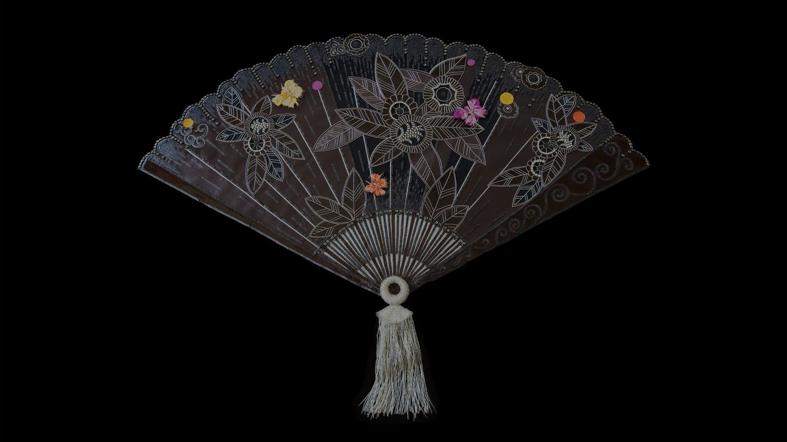
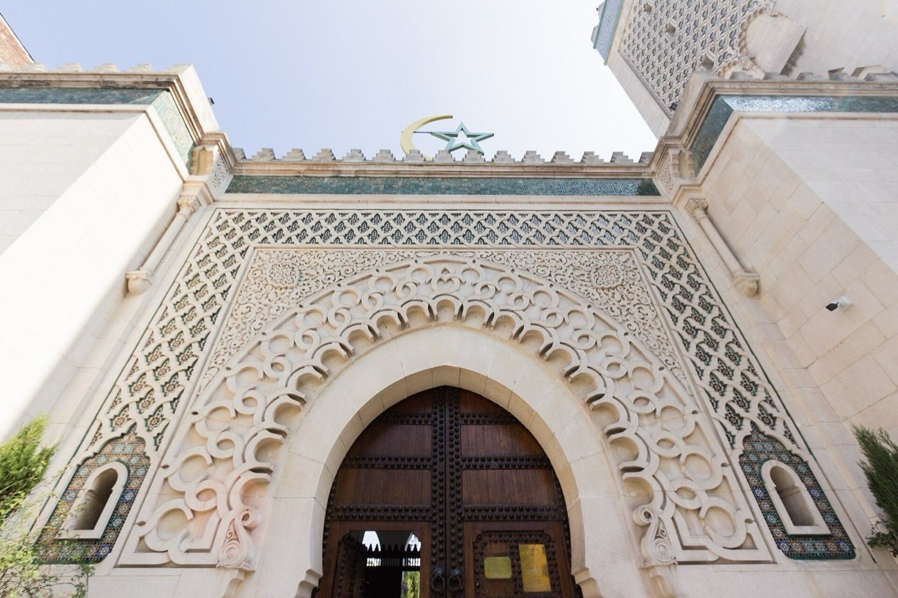
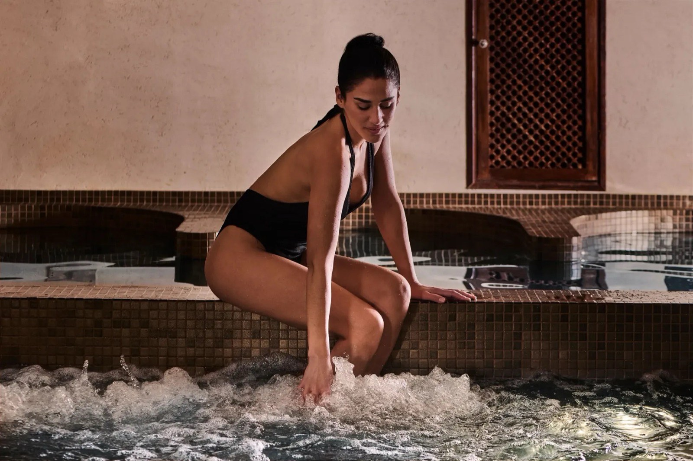

Meilleur spa avec hammam à Paris : 8 adresses, 5 testées
Un spa de palace et une maison orientale ne vendent pas la même chose, et surtout
pas au même droit d'entrée. Sur les huit adresses de cette page, deux seulement
acceptent que vous poussiez la porte sans réserver de soin, et aucun des trois
palaces n'ouvre ses bassins à un visiteur extérieur.
Par Lucas Lecoq, rédacteur en chef✺Publié le 5 août 2026✺16 min de lecture
La salle chaude du Hammam Pacha, 17 rue Mayet. Sept cents mètres carrés
réservés aux femmes, et l'une des deux seules adresses de cette page à vendre une entrée
sans obligation de soin. Photo : Hammam Pacha, site officiel.
TL;DR : l'essentielDeux familles, deux grilles, un seul vrai critère
Pour le hammam de palace : le Spa Le Bristol by La Mer (8e),
18,2/20 : marbre de Carrare, 44 °C tenus à l'horloge, gommage kessa par des
praticiens formés à Marrakech. 150 €, hammam compris, piscine non comprise.
Pour la tradition : le hammam de la Grande Mosquée de Paris (5e),
16,9/20 : 52 °C mesurés, la plus forte chaleur de nos relevés parisiens,
30 € l'entrée simple, serviette et thé compris, sans réservation.
Attention, il est exclusivement réservé aux femmes malgré les créneaux
hommes que la moitié des annuaires publient encore.
Pour venir à deux : Les Cent Ciels République (11e),
15,8/20, mixte en soirée et le week-end, rituel de trois heures à
47 €. Ou Medina Center (19e), 16,4/20,
tous publics le samedi.
La donnée qui décide de tout : sur ces huit adresses,
deux seulement vendent une entrée sèche, la Grande Mosquée à 30 € et Hammam
Pacha à 39 €. Les six autres exigent que vous réserviez une prestation. Et
aucun des trois spas de palace n'ouvre sa piscine à un non-résident :
ce que vous achetez au Bristol ou au George V, c'est un soin et une salle de vapeur,
pas la vue.
Pourquoi cette page porte trois sortes de notes, et trois seulement
« Spa avec hammam » recouvre deux métiers que rien ne rapproche. D'un côté le spa d'hôtel, dont le hammam est une pièce parmi douze, au bout d'un couloir de cabines. De l'autre la maison orientale, dont le hammam est le métier, et où le reste, thé, salon de repos, restaurant, existe pour prolonger la séance. Les noter sur la même échelle n'aurait aucun sens. Nous ne le faisons pas.
Cinq de ces huit adresses ont été visitées anonymement entre avril et juillet 2026, thermomètre digital en main, relevé à 1,50 m du sol vingt minutes après l'entrée en salle. Elles portent un score Protocole LMHS sur 20, repris à l'identique de notre palmarès des hammams parisiens, pour qu'une même adresse ne porte jamais deux notes différentes sur ce site.
Le Four Seasons George V porte un Score LMHS Spa sur 10, celui de notre comparatif des spas de palace parisiens. C'est une grille documentaire : équipements, profondeur du catalogue, ambiance, rapport prix-expérience. Elle ne mesure pas la chaleur d'une salle de vapeur, et une note sur 20 et une note sur 10 ne se comparent pas, comme l'explique notre méthode. Les deux chiffres coexistent dans le tableau ci-dessous ; ils ne se classent pas l'un contre l'autre.
Le Mandarin Oriental Paris et Aux Bains Montorgueil ne portent aucune note. Nous n'y sommes pas allés. Plutôt que de fabriquer un chiffre, nous documentons ce qui se vérifie à distance et nous le disons, comme pour nos sept hammams lyonnais. Les visites sont programmées.
Le tableau : ce que vous payez, et ce que ça ouvre
Établissement
Arr.
Famille
Ticket d'entrée
Entrée sèche
Public
Note LMHS
Spa Le Bristol by La Mer
8e
Palace
150 €
Non, soin requis
Mixte
18,2/20
Grande Mosquée de Paris
5e
Orientale
30 €
Oui
Femmes
16,9/20
Hammam Medina Center
19e
Orientale
Forfait
Non, forfait imposé
Femmes, samedi mixte
16,4/20
Les Cent Ciels République
11e
Orientale
47 €
Non, rituel requis
Femmes en journée, mixte le soir
15,8/20
Hammam Pacha
6e
Orientale
39 €
Oui
Femmes
15,3/20
Four Seasons George V
8e
Palace
Soins seuls
Non, soin requis
Mixte
8,5/10 grille spa
Mandarin Oriental Paris
1er
Palace
non formalisé
Non
Mixte
non noté
Aux Bains Montorgueil
2e
Orientale
69 €
Non, gommage inclus
Femmes
non noté
Les notes sur 20 relèvent du Protocole LMHS et supposent une visite anonyme
avec relevé de température. La note sur 10 du George V relève de la grille documentaire des
spas de palace : les deux échelles ne se comparent pas. Le « ticket d'entrée »
est le montant minimum à engager pour un visiteur extérieur. Tarifs, publics et horaires
relevés le 5 août 2026 sur les sites officiels des établissements.
Les trois spas de palace : beaucoup de marbre, peu de portes ouvertes
01
Spa Le Bristol by La Mer, Faubourg Saint-Honoré 18,2/20
Pour qui : ceux qui veulent le meilleur hammam de Paris et qui acceptent d'en payer le prix sans rien voir de la piscine.
Quatre cent quarante mètres carrés au sixième étage, et la seule salle de vapeur parisienne qui tienne 44 °C avec une régularité d'horloger. Le marbre de Carrare, le plafond voûté, la lumière basse : on y entre comme dans un lieu de culte. Le gommage kessa est pratiqué par des praticiens formés à Marrakech, avec un savon beldi importé. Huit cabines dont deux suites duo, rituels La Mer et menu Tata Harper. C'est la première place de notre palmarès des hammams parisiens, et elle n'est pas contestée.
Le bémol LMHS : tout le monde vend ce spa sur sa piscine en teck suspendue au-dessus des toits, avec la Tour Eiffel au fond. Elle est réservée aux résidents. Les 150 € d'un visiteur extérieur donnent accès aux soins et au hammam, pas au bassin, et il faut réserver deux semaines à l'avance pour un week-end. C'est le prix d'une nuit dans un bon hôtel de province.
112 rue du Faubourg Saint-Honoré, 8e · 440 m² · Mixte · Hammam marbre de Carrare, 44 °C mesurés ·
Accès non-résident 150 €, piscine exclue · 9 h-21 h, 7 j/7 ·
Site officiel →
02
Le Spa du Four Seasons George V, avenue George-V 8,5/10
Pour qui : les résidents. Pour les autres, un soin, et rien de plus.
C'est le seul établissement de cette page à posséder deux hammams distincts, l'un en marbre, l'autre en mosaïques, chacun flanqué d'une fontaine glacée. Sept cent vingt mètres carrés redessinés en 2018 par Pierre-Yves Rochon, piscine de 17 mètres, bassin vitalité chauffé à 34 °C, fitness Technogym de 90 m², six cabines dont une suite duo, salon de coiffure intégré. Marques Dr. Burgener Switzerland, Olivier Claire et Swiss Perfection : la profondeur du catalogue de soins est la meilleure de Paris, et les thérapeutes sont régulièrement cités parmi les meilleurs de la ville pour le deep tissue.
Le bémol LMHS, et il est rédhibitoire pour le sujet de cette page : piscine, bassin vitalité et fitness sont réservés aux résidents, et les deux hammams appartiennent à ce même parcours aquatique. Un non-résident peut réserver un soin de 9 h à 21 h, mais l'accès à la vapeur ne lui est pas garanti : il faut appeler l'établissement et le faire confirmer avant de réserver. Son indice accessibilité est de 2/5 dans notre comparatif des palaces. Note sur 10 issue de la grille documentaire, sans relevé de température : elle ne se compare pas aux notes sur 20 de cette page.
31 avenue George-V, 8e · 720 m² · Mixte · Deux hammams, marbre et mosaïques ·
Soins non-résidents 9 h-21 h, installations aquatiques réservées aux résidents ·
Site officiel →
03

Spa du Mandarin Oriental Paris, rue Saint-Honoré non noté
Pour qui : les résidents, et les curieux prêts à décrocher leur téléphone.
Neuf cents mètres carrés à deux pas de la place Vendôme, ce qui en fait l'un des plus vastes spas d'hôtel de Paris, très au-dessus des 440 m² du Bristol. Un hammam aux herbes orientales, une douche-hammam, une piscine intérieure chauffée, plusieurs suites de soins et un centre de fitness. Ouvert tous les jours de 9 h à 21 h. Le soin signature, Mandarin Oriental Signature Spa Therapies, dure 2 h 20 et coûte 400 €. Ne le confondez pas avec le Mandarin Oriental Lutetia, boulevard Raspail : ce sont deux maisons différentes, et c'est la seconde qui figure dans notre comparatif des spas de palace.
Le bémol LMHS : nous n'avons pas visité ce spa, il ne reçoit donc aucune note, ni sur 20 ni sur 10. Et comme chez sa maison sœur du Lutetia, le périmètre ouvert aux non-résidents n'est pas formalisé publiquement : ni tarif d'accès, ni règle affichée sur les installations aquatiques. Il faut appeler pour savoir ce qu'on peut réserver, ce qui est peu pour un spa de cette taille.
251 rue Saint-Honoré, 1er · 900 m² · Mixte · Hammam aux herbes orientales, piscine intérieure chauffée ·
9 h-21 h · Soin signature 2 h 20 à 400 € · Accès non-résident à confirmer par téléphone ·
Site officiel →
Les cinq maisons orientales : le hammam comme métier
04

Hammam de la Grande Mosquée de Paris, Quartier latin 16,9/20
Pour qui : les femmes, et personne d'autre. C'est le meilleur rapport entre le prix et l'authenticité de cette page.
Bâtie en 1926 pour honorer les soldats musulmans morts pour la France, la Mosquée abrite le hammam le plus authentique de la capitale. On pousse une porte de bois sculpté, on traverse un couloir de mosaïques vertes et blanches, et l'on arrive dans une pièce qui n'a presque pas bougé en un siècle. Notre relevé y a donné 52 °C, la plus forte chaleur de tous nos hammams parisiens. Le gommage kessa se pratique à l'ancienne, long et sans ménagement. L'entrée simple est à 30 €, serviette et thé à la menthe compris, et l'établissement écrit lui-même qu'il ne prend aucune réservation : c'est l'adresse la plus spontanée de Paris. Les formules montent de 50 € (bains et vapeurs) à 140 € (massage et soins du corps), avec 60, 70, 80, 90 et 110 € entre les deux. Accès à partir de 12 ans.
Le bémol LMHS, et c'est le point à vérifier avant de vous déplacer : le hammam est aujourd'hui exclusivement réservé aux femmes, ouvert tous les jours de 10 h à 21 h. Son site officiel l'écrit noir sur blanc. Une bonne moitié des annuaires parisiens continue pourtant d'annoncer des créneaux hommes le mardi de 14 h à 21 h et le dimanche de 10 h à 21 h : cette information est périmée, et un homme qui s'y fie se déplacera pour rien. Pour le reste, l'entretien est inégal selon les jours et l'accueil peut être brusque.
39 rue Geoffroy-Saint-Hilaire, 5e · Femmes uniquement, dès 12 ans · Tous les jours 10 h-21 h ·
52 °C mesurés · Entrée 30 €, formules 50 à 140 €, sans réservation ·
Site officiel →
05
Hammam Medina Center, La Villette 16,4/20
Pour qui : un couple ou un groupe mixte, le samedi, qui veut le parcours complet sans le tarif d'un palace.
Sept cents mètres carrés derrière une façade discrète du 19e, et le parcours d'eau le plus complet de cette page hors palace : hammam entre 45 et 55 °C, sauna sec entre 60 et 90 °C, bassin froid entre 18 et 21 °C, lits de pierre chaude en marbre, salle de gommage, salon de thé et espace de repos. Notre relevé y a donné 49 °C en salle principale. Les séances durent d'une heure et demie à trois heures selon la formule. L'ambiance est détendue, on y traîne, personne ne regarde sa montre. Le samedi, la maison ouvre à tous les publics, femmes, hommes, couples et groupes, ce qui en fait l'une des rares adresses orientales de Paris où venir à deux.
Le bémol LMHS : l'établissement ne vend aucune entrée sèche, la règle est écrite sur son propre site, et la réservation est obligatoire. Vous devez donc engager un forfait comprenant au moins une prestation, ce qui exclut la visite d'impulsion. Du lundi au vendredi et le dimanche, l'accès est réservé aux femmes. Et le quartier est moins commode que le centre.
43-45 rue Petit, 19e · 700 m² · Femmes du lundi au vendredi et le dimanche, tous publics le samedi ·
Hammam 45-55 °C, sauna, bassin froid 18-21 °C, pierre chaude · Forfait et réservation obligatoires ·
Site officiel →
06

Les Cent Ciels, République 15,8/20
Pour qui : un couple en soirée ou le week-end, et les femmes qui préfèrent l'entre-soi en journée.
Rue de Nemours, à deux pas d'Oberkampf, la maison enchaîne hammam tiède et hammam chaud, sauna, bassins et cabines de soins secs, avec un salon de repos et un salon de thé. Notre relevé y a donné 46 °C, une chaleur douce à l'échelle de cette page. Le Rituel Initiation dure trois heures et coûte 47 €, ce qui reste le meilleur rapport durée-prix de ce guide ; les rituels avec soins montent de 79 à 220 €. La gestuelle suit la tradition marocaine, savon noir, gommage au gant, rhassoul.
Le bémol LMHS, et c'est une confusion que nous avons nous-mêmes propagée : les 900 m² que tous les guides attribuent aux Cent Ciels sont ceux de Boulogne-Billancourt, pas ceux de Paris. L'adresse parisienne du 11e ne publie pas sa surface, et elle est nettement plus petite. Attention aussi à la mixité, souvent mal recopiée : la maison est réservée aux femmes du lundi au vendredi de 10 h à 17 h, et ne devient mixte qu'en soirée du lundi au vendredi de 17 h à 22 h, puis le samedi et le dimanche de 10 h à 22 h. Venir à deux un mardi après-midi n'est pas possible.
7 rue de Nemours, 11e · Surface non publiée · Femmes en journée du lundi au vendredi, mixte le soir et le week-end ·
46 °C mesurés · Rituel Initiation 3 h à 47 €, rituels jusqu'à 220 € ·
Site officiel →
07
Hammam Pacha, rue Mayet 15,3/20
Pour qui : les femmes qui veulent une vraie séance sans réserver quoi que ce soit à l'avance, et qui comptent y passer la journée.
Sept cents mètres carrés dans le 6e, entre Duroc et Montparnasse, exclusivement réservés aux femmes, à partir de quatorze ans. La maison revendique trente-six ans d'expérience, ce qui en fait l'une des plus anciennes de Paris. Notre relevé y a donné 51 °C, presque la chaleur de la Grande Mosquée. Trois salles de chaleur progressive, des mosaïques orangées, une clientèle de quartier qui donne à l'endroit sa couleur. L'entrée est à 39 €, le gommage à 20 €, et les forfaits vont de 60 à 235 €. Le restaurant bio, dont les plats sont préparés sur place, prolonge la séance : c'est la seule adresse de cette page où l'on peut passer six heures sans ressortir.
Le bémol LMHS : ni sauna ni bassin, donc pas de parcours d'eau et pas de contraste chaud-froid. Les installations ont vieilli par endroits et l'accueil est variable. Et les horaires sont courts en début de semaine, de 11 h à 19 h du lundi au mercredi. Rectification à notre propre palmarès : nous situions cette maison dans le 18e arrondissement. C'est une erreur, elle est au 17 rue Mayet, dans le 6e, et nous l'avons corrigée.
17 rue Mayet, 6e · 700 m² · Femmes uniquement, dès 14 ans · 51 °C mesurés ·
Entrée 39 €, gommage 20 €, forfaits 60 à 235 € · Restaurant bio ·
Lun-mer 11 h-19 h, jeu-ven 11 h-22 h, sam-dim 10 h-19 h ·
Site officiel →
08
Aux Bains Montorgueil, Montorgueil non noté
Pour qui : les femmes qui cherchent la gestuelle marocaine dans une petite maison, en plein centre, et qui réservent.
Cinquante-cinq rue Montorgueil, l'établissement est tenu par la Coopérative des femmes du Maroc, et c'est ce qui le distingue : les gommeuses y pratiquent la gestuelle traditionnelle, et tous les produits employés sont naturels et bios. L'emplacement, au cœur du 2e, est le plus central de cette page. La formule d'entrée est à 69 € et comprend le hammam et le gommage au savon noir ; le massage de trente minutes est à 52 €, celui de quatre-vingt-dix minutes à 90 €, et la formule hammam, gommage et massage de quatre-vingt-dix minutes à 88 €. Ouvert du mardi au dimanche de 10 h à 21 h, uniquement sur rendez-vous.
Le bémol LMHS : nous n'y sommes pas allés, cette adresse ne porte donc aucune note, et nous ne pouvons rien dire de la température réelle de sa salle. Sur le papier, l'espace est petit, il n'y a ni sauna ni bassin, donc pas de parcours d'eau, et la maison est réservée aux femmes, sauf privatisation en couple sur rendez-vous. Enfin, 69 € pour une entrée avec gommage la place au-dessus de la Grande Mosquée, dont la formule équivalente est à 50 €.
55 rue Montorgueil, 2e · Femmes uniquement, privatisable en couple sur rendez-vous ·
Coopérative des femmes du Maroc, produits naturels et bios ·
Hammam et gommage 69 € · Mardi à dimanche 10 h-21 h, sur rendez-vous ·
Site officiel →
La question que personne ne pose : qui vous laisse vraiment entrer ?
Tous les guides de spas avec hammam à Paris publient des tarifs. Presque aucun ne précise ce que ces tarifs ouvrent, et c'est pourtant là que se joue la déception. Voici ce que nous avons établi adresse par adresse, le 5 août 2026.
Les deux seules entrées sèches de Paris
La Grande Mosquée, 30 €, et Hammam Pacha, 39 €. Ce sont les deux seules adresses de cette page où vous pouvez pousser la porte, payer, et vous asseoir dans la vapeur sans avoir rien réservé ni engagé de soin. Deux sur huit. Si la spontanéité compte pour vous, la liste s'arrête là.
Les six autres exigent une prestation
Medina Center l'écrit noir sur blanc sur son site : aucune entrée sans prestation, et réservation obligatoire. Les Cent Ciels vend des rituels, à partir de 47 € pour trois heures. Aux Bains Montorgueil intègre le gommage dans ses 69 € et ne reçoit que sur rendez-vous. Les trois palaces, eux, vendent des soins.
Et aucun palace n'ouvre ses bassins
C'est le constat le plus net de ce guide, et il vaut pour les trois. La piscine en teck du Bristol est réservée aux résidents, comme la piscine de 17 mètres et le bassin vitalité du George V. Au Mandarin Oriental Paris, la règle n'est même pas publiée. Un non-résident qui paie 150 € au Bristol achète un soin et le meilleur hammam de Paris, ce qui est déjà beaucoup ; il n'achète pas la vue sur la Tour Eiffel que les photographies promettent. Notre comparatif des spas de palace parisiens détaille cette accessibilité établissement par établissement, et note qu'un seul palace de Paris, le Royal Monceau, vend un vrai forfait journée.
Le mot de LucasLe marbre ne fait pas la chaleur
Si l'on m'avait demandé avant nos relevés lequel de ces huit établissements chaufferait le plus fort, j'aurais répondu le Bristol, parce que c'est le plus cher et le plus beau. J'aurais eu tort de huit degrés. Le Bristol tient 44 °C, la Grande Mosquée en donne 52, pour cinq fois moins cher. Le palace gagne notre classement sur la constance, la propreté, la main du praticien et l'ensemble du service, ce qui est parfaitement légitime. Mais si vous venez chercher ce que le mot hammam désigne vraiment, une chaleur qui vous fait céder puis quelqu'un dont c'est le métier de vous gommer, la Mosquée vous en donne davantage, à 30 €. Reste que ce guide m'a surtout appris une chose désagréable sur mon propre métier : la moitié des annuaires parisiens envoient encore les hommes au hammam de la Mosquée le mardi, alors que l'établissement écrit depuis un moment qu'il est réservé aux femmes. Personne ne recopie la source, tout le monde recopie le voisin. Nous avons vérifié les huit adresses une par une, sur leurs propres sites, et nous datons chaque relevé. C'est le minimum, et c'est rare.
Lucas Lecoq, rédacteur en chef
Comment choisir selon ce que vous cherchez
Le luxe, sans se raconter d'histoires
Le Spa Le Bristol by La Mer, 150 €, hammam compris et piscine exclue. C'est le meilleur hammam de la ville et le service le plus abouti, à condition d'accepter que vous n'achetez pas les installations aquatiques. Réservez deux semaines à l'avance pour un week-end.
La tradition, au meilleur prix
La Grande Mosquée de Paris, 30 € l'entrée, 52 °C mesurés, un siècle d'histoire, un décor classé et aucune réservation à prendre. Aucune autre adresse de Paris n'offre ce rapport. Réservé aux femmes, tous les jours de 10 h à 21 h.
Venir à deux
Medina Center le samedi, le seul jour où la maison ouvre à tous les publics, avec le parcours d'eau complet. Ou Les Cent Ciels République en soirée du lundi au vendredi, ou le week-end. Pour un cadre de palace, le Bristol est mixte en permanence. Et Aux Bains Montorgueil se privatise en couple, sur rendez-vous.
Entre femmes
Hammam Pacha pour une journée entière, restaurant bio compris, avec l'avantage rare de l'entrée à 39 € sans réservation. Aux Bains Montorgueil pour la gestuelle marocaine en plein centre. Et Les Cent Ciels en journée de semaine, où l'entre-soi est la règle jusqu'à 17 h.
Sans rien réserver
Deux adresses, et deux seulement : la Grande Mosquée et Hammam Pacha. Partout ailleurs, il faut un rendez-vous, un forfait ou un soin.
Le parcours d'eau complet
Medina Center : hammam de 45 à 55 °C, sauna sec de 60 à 90 °C, bassin froid de 18 à 21 °C et pierre chaude en marbre. C'est le seul enchaînement chaud-froid abouti de cette page hors palace, et il coûte le prix d'un forfait, pas celui d'une nuit d'hôtel. Pour le bain froid seul, voir nos cinq spas parisiens avec bain froid.
FAQ : spa avec hammam à Paris
Quel est le meilleur spa avec hammam à Paris ?
Cela dépend de la famille visée, et les deux ne se comparent pas. Côté palace, le Spa Le Bristol by La Mer, 18,2/20, hammam en marbre de Carrare tenu à 44 °C, accès non-résident à 150 € soins et hammam compris, piscine exclue. Côté maison orientale, le hammam de la Grande Mosquée de Paris, 16,9/20, 52 °C mesurés et 30 € l'entrée simple. Si votre critère est la chaleur et l'authenticité du rituel, c'est la Mosquée. Si c'est la constance du service, c'est le Bristol.
Quel spa avec hammam à Paris pour un couple ?
Quatre réponses selon le budget. Medina Center le samedi (19e), seul jour où la maison ouvre à tous les publics, avec hammam, sauna et bassin froid. Les Cent Ciels République (11e), mixte du lundi au vendredi de 17 h à 22 h et le week-end de 10 h à 22 h, rituel de trois heures à 47 €. Aux Bains Montorgueil (2e), privatisable en couple sur rendez-vous. Et le Spa Le Bristol (8e), mixte en permanence, à 150 € par personne. Écartez d'emblée la Grande Mosquée et Hammam Pacha : ces deux-là sont réservés aux femmes.
Les hommes peuvent-ils aller au hammam de la Grande Mosquée de Paris ?
Non, plus aujourd'hui. Le site officiel de la Grande Mosquée indique que son hammam est exclusivement réservé aux femmes, ouvert tous les jours de 10 h à 21 h, accès dès 12 ans, sans réservation. De nombreux annuaires et guides parisiens publient encore des créneaux hommes le mardi de 14 h à 21 h et le dimanche de 10 h à 21 h : ces horaires sont périmés et ne figurent plus sur les supports de l'établissement. Les hommes qui cherchent un hammam traditionnel à Paris se rabattront sur Medina Center, ouvert à tous les publics le samedi.
Combien coûte un spa avec hammam à Paris ?
De 30 à 150 € pour le ticket d'entrée, selon la famille. Les maisons orientales vont de 30 € (Grande Mosquée, entrée simple) à 69 € (Aux Bains Montorgueil, gommage compris), en passant par 39 € (Hammam Pacha) et 47 € (Les Cent Ciels, rituel de trois heures). Les spas de palace demandent 150 € au Bristol, et vendent des soins à la carte au George V et au Mandarin Oriental. Les formules avec massage montent de 50 € à la Mosquée jusqu'à 400 € pour le soin signature du Mandarin Oriental.
Peut-on aller dans un spa avec hammam à Paris sans réservation ?
Dans deux établissements sur les huit de cette page. La Grande Mosquée de Paris (30 €) et Hammam Pacha (39 €) vendent une entrée sèche, sans obligation de réserver un soin. Partout ailleurs, une prestation est exigée : Medina Center l'indique explicitement sur son site et impose la réservation, Aux Bains Montorgueil ne reçoit que sur rendez-vous, Les Cent Ciels vend des rituels, et les trois palaces vendent des soins à réserver, deux semaines à l'avance au Bristol pour un week-end.
Quelle différence entre un spa de palace et un hammam traditionnel à Paris ?
Ce sont deux métiers. Dans un spa de palace, le hammam est une pièce parmi d'autres au bout d'un couloir de cabines : le service, la constance et le catalogue de soins font la valeur, et l'accès coûte de 100 à 150 €. Dans une maison orientale, le hammam est la raison d'être : salle tiède, salle chaude, gommage au gant par un praticien, savon noir, rinçage, repos, pour 30 à 69 €. Nos relevés montrent que le prix ne prédit pas la chaleur : 44 °C au Bristol contre 52 °C à la Grande Mosquée.
Les spas de palace parisiens donnent-ils accès à leur piscine ?
Pas aux visiteurs extérieurs. La piscine en teck du Bristol, la piscine de 17 mètres et le bassin vitalité du Four Seasons George V sont réservés aux résidents de l'hôtel. Au Mandarin Oriental Paris, le périmètre ouvert aux non-résidents n'est pas publié. Un seul palace parisien vend un vrai forfait journée avec accès aux installations, le Royal Monceau, à 210 €, et il figure dans notre comparatif des spas de palace.
Pourquoi trois adresses de cette page n'ont-elles pas la même note ?
Parce qu'elles ne relèvent pas de la même grille. Cinq adresses ont été visitées anonymement avec relevé de température et portent un score Protocole LMHS sur 20. Le Four Seasons George V porte un Score LMHS Spa sur 10, issu de notre grille documentaire des spas de palace, qui ne mesure pas la chaleur d'une salle de vapeur : les deux échelles ne se comparent pas. Le Mandarin Oriental Paris et Aux Bains Montorgueil ne portent aucune note, faute de visite. Leur attribuer un chiffre affaiblirait tous les autres.
Méthode et sources
8 spas parisiens dotés d'un hammam, répartis en deux familles qui ne se comparent pas : trois spas de palace et cinq maisons orientales. Cinq ont été visités anonymement entre avril et juillet 2026, températures relevées au thermomètre digital de précision (±0,5 °C) à 1,50 m du sol, vingt minutes après l'entrée en salle principale : leurs scores Protocole LMHS sur 20 sont repris à l'identique de notre palmarès des hammams de Paris, afin qu'une même adresse ne porte jamais deux notes différentes sur ce site. Le Four Seasons George V porte le Score LMHS Spa sur 10 de notre comparatif des spas de palace, établi sur grille documentaire, sans relevé de température : une note sur 20 et une note sur 10 ne se comparent pas. Le Mandarin Oriental Paris et Aux Bains Montorgueil n'ont pas été visités et ne reçoivent aucune note. Tarifs, surfaces annoncées, publics et horaires relevés le 5 août 2026 sur les sites officiels des établissements ; les surfaces sont déclaratives et n'ont pas été mesurées. Aucun partenariat commercial, aucune affiliation. Photographies : Hammam Pacha et Les Cent Ciels (sites officiels), Bristol (Gzen92, CC BY-SA 4.0), George V (Claus, domaine public), Mandarin Oriental (Chabe01, CC BY-SA 4.0), Grande Mosquée (LPLT, CC BY-SA 4.0).
8 adresses5 visites anonymes0 note sans visite0 partenariat